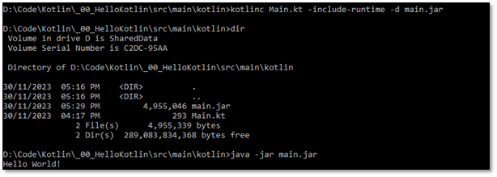
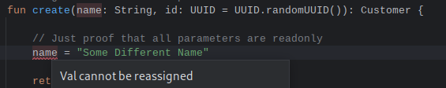
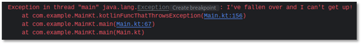
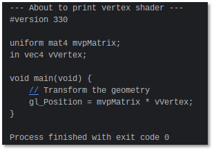

Learn

Yesterday
A learning guide to transition from Java to Kotlin, ASAP!
Table of Contents
6 Further Classes and Functions, Companion Objects, and Java/Kotlin Interaction.............. 20
The MIT License (MIT)
Copyright 2024 Al Lansley
Permission is hereby granted, free of charge, to any person obtaining a copy of this software and associated documentation files (the Software), to deal in the Software without restriction, including without limitation the rights to use, copy, modify, merge, publish, distribute, sublicense, and/or sell copies of the Software, and to permit persons to whom the Software is furnished to do so, subject to the following conditions:
The above copyright notice and this permission notice shall be included in all copies or substantial portions of the Software.
THE SOFTWARE IS PROVIDED AS IS, WITHOUT WARRANTY OF ANY KIND, EXPRESS OR IMPLIED, INCLUDING BUT NOT LIMITED TO THE WARRANTIES OF MERCHANTABILITY, FITNESS FOR A PARTICULAR PURPOSE AND NONINFRINGEMENT. IN NO EVENT SHALL THE AUTHORS OR COPYRIGHT HOLDERS BE LIABLE FOR ANY CLAIM, DAMAGES OR OTHER LIABILITY, WHETHER IN AN ACTION OF CONTRACT, TORT OR OTHERWISE, ARISING FROM, OUT OF OR IN CONNECTION WITH THE SOFTWARE OR THE USE OR OTHER DEALINGS IN THE SOFTWARE.
The Kotlin and IntelliJ IDEA logos are copyright JetBrains s.r.o.
0 - Intro / Overview / Use Case
I can code. I know Java. I need to learn Kotlin (both the basics and how it's used in Android development). And I need to learn it fast - so what are we waiting for? Lets get our Kotlin on!
This guide will be using the free IntelliJ
IDEA Community Edition IDE which can be found at:
https://www.jetbrains.com/idea/download/
IntelliJ IDEA contains a bundled Kotlin
compiler, but to compile from the command line (should we wish) then we can
install a separate command-line compiler (kotlinc) such as the one at:
https://kotlinlang.org/docs/command-line.html
If you add the command-line compiler in
Windows then you might want to put it somewhere like:
C:\Program Files\kotlin
and then add the following to your PATH
variable:
C:\Program
Files\kotlin\bin
Both IDEA and the Kotlin compiler are also
commonly available through package managers on Linux, for example on Arch Linux
they exist in the extra repository, where you can install them both in
one fell swoop via a call to:
sudo pacman -Suy
intellij-idea-community-edition kotlin
Alternatively on Linux, the JetBrains Toolbox app can be used to install & manage all JetBrains IDEs and tools (as well as Android Studio) which can be quite convenient: https://www.jetbrains.com/toolbox-app/
To actually learn Kotlin I'm going through a video course called Kotlin
Fundamentals by Edvin Syse (who is a
fantastic teacher btw so a big thanks to Edvin for doing such a good job!).
The course is from a Humble Bundle I got in 2018 so it's a couple of years old
at this point in 2023, but it'll be fine to learn the basics - so without any
further ado, let's begin!
1 Kotlin Basics and Compiling from the Command Line
Rather than having to create a class and provide public static void main(String[] args) as a program's entry-point like you would in Java, we can use the same special main name but we provide it as a package-level function instead. Package-level functions allow us to declare a function directly inside a package (even an empty/anonymous one) without having to declare a class first, so you would do the same kind of Hello, World! functionality in Kotlin like this:
fun main(args: Array<String>) {
println("Hello, World!")
}
Note: We can omit the args: Array<String> part and have no arguments if we wish, however if we are going to provide arguments then some of the first Kotlin-specific differences we might notice is that Array is a templated type in Kotlin (unlike in Java where we would use String[]) and that when declaring parameters (or variables for that matter) the syntax is name: <Type> rather than <Type> name.
Also: If you get an error message like Target JRE version does not match project JDK version (null) in IDEA then go to: "Project Structure | Modules Dependencies and set the JRE version to the IntelliJ built in one, which at the time of writing is currently: jbr-17
To build and run a project in IDEA, asides from just clicking the Play button, we can use the following hotkeys:
|
|
Build only |
Build and Run |
|
Debug |
|
Shift+ F9 |
|
Release |
Shift + F10 |
Note: As handy look-up, double-tapping Shift then going to the Actions tab (or pressing Ctrl + Shift + A) brings up the "Find actions" dialogue where you can search for any actions / operations that IDEA can perform and it'll show you the hotkey (if there is one).
There is also keymap / cheat-sheet that you might find useful here:
https://resources.jetbrains.com/storage/products/intellij-idea/docs/IntelliJIDEA_ReferenceCard.pdf
To compile a Kotlin program from the command line wed use something like:
kotlinc Main.kt -d <some-destination-folder>
The compiled output will be placed into the destination folder and will be a a file like Main.class however we cant run that .class file directly, so instead we can output to a .jar file like this:
kotlinc Main.kt -d main.jar
Which we can then run via: kotlin -classpath main.jar MainKt
While this works, it requires the user to have both the Kotlin runtime and the JRE available to run it so if we wanted to package this program up so that it only needed the JRE we would use:
kotlinc Main.kt -include-runtime -d main.jar.jar
And then we could run it directly through java via:
java -jar main.jar

Note: When we include the Kotlin runtime the jar file goes from ~2KB to ~5MB!
2 - Classes, Types, and Basic Syntax
Classes are defined by saying things like: class Person and all Kotlin classes are final by default (i.e., by default they cannot be sub-classed!)
The simplest possible class we can create would be something like this:
class Person
To make a class which can be sub-classed we would have to define it as:
open class Person
In terms of accessibility, Kotlin classes are also public by default, so if we didn't want the class to be accessed in a public manner then we have to explicitly declare the class as private, such as via:
private class Person
To declare a class with properties and a constructor in one go we can specify arguments as part of the class definition, for example via val name: Type:
class Person(val name: String, val age: Int)
or via var name: Type:
class Person(var name: String, var age: Int)
This is called a primary constructor. It's defined as part of the class, and we can only have one primary constructor per class.
The difference between val and var is that val is immutable i.e., it's essentially const. In the above Person class once we've set the name and age via a val declaration of the constructor arguments then we can never change them! Conversely, if we use var then we are free to say somePerson.name = "A. DifferentName" at some later time after creating a Person instance.
For those of a curious nature, what's happening beneath the hood in the bytecode is that when you use var then you're automatically given a generated setter method (setName, setAge etc.) while when you use val you're not and without a setter the value can never be changed and is hence immutable!
Rather than having val or var in the class definition we can move them into the body of the class should we wish, by going:
class Person(name: String, age:
Int) {
val name = name;
val age = age;
}
In the above class definition Kotlin is able to automatically infer the types based on the input arguments, but if we wished to specify them explicitly then we can do so via:
class Person(name: String, age:
Int) {
val name: String = name;
val age: Int = age;
}
Another way of running a public constructor (for if we wanted to do some other stuff with the input arguments asides from just assigning them) is that we can take the constructor data as parameters (without using val or var in the class definition line), and then provide a special init method which runs automatically and which we can use to assign the values & do any other setup we might need. For example:
// Input is simply via parameters..
class Person(name: String, age: Int) {
// ..and NOW we define them as class
properties..
val name: String
val age: Int
// ..`init` gets called automatically so we
can do any constructor work here
init {
this.name = name
this.age = age
}
}
Yet another way to define the above class using a secondary constructor would be something like this (although in this example there's absolutely no reason why we would do it this way):
class Person {
// These properties cannot be `val` because
all
// vals must be initialised on creation or be abstract!
var name: String
var age: Int
// ----- Constructor executed will be based on signature of call -----
constructor(name: String, age: Int) {
this.name = name
this.age = age
}
constructor(age: Int) {
name = "John Doe" // Placeholder marked `var`
this.age = age;
}
constructor(name: String) {
this.name = name
age = -1 // Placeholder marked `var`
}
constructor() {
name = "John Doe"
age = -1
}
}
If we don't need to do anything other than assign values then using the combined class definition/declaration/constructor is the likely the way to go as it's far less boiler-plate (we'd only use the init block way of doing things if we wanted to calc things on creation, or do some logging etc.).
IMPORTANT: Only variables defined inside the primary constructor or the class body get turned into properties if we'd placed var name: String inside one or more of the constructors above then this is just a local variable and it doesn't add the property to the class!
Should we wish, then we can specify that any constructor should be private, which means it can only be called from within the class (such as if the class was a singleton, or a static utility class, or if we wanted to use a factory method for instantiation):
class Person private constructor(var name: String, var age: Int)
Finally, if we were using an injection framework then we could use something like:
annotation class Inject
class Person @Inject constructor(val name: String, val age: Int)
Just as an aside, we can definite multiple classes, or multiple package-level functions within the same class.
Then, when we actually want to run some code we can either type out the main function ourselves, or the way to quickly insert a main function in IntelliJ IDEA is to type psvm (standing for public static void main) followed by the Tab key, which will generate us a blank main method like this:
fun main() {
}
Going back to the Person class, if we wanted age to be null (and by default we cannot assign null to an Int) then we would have to declare the property with a question-mark following the type, like this:
class Person (val name: String, val age: Int?)
When we go to use this Person class inside the main method, we might do so as follows:
fun main() {
val person =
Person("John Doe", 42)
person.age = null // Only possible because the property is defined as `Int?`
}
However, if we then went something like: val nextAge = somePerson.age + 1 then Kotlin won't allow it because age could be null and you can't add 1 to null! One terrible way to resolve this is to use the not-null-assertion operator `!!` to indicate that we don't think age will be null via:
val nextAge = somePerson.age!! + 1
However, a better way is to provide a default assignment (such as to zero) using the Elvis operator if we see that somePerson.age is null via a line like: val nextAge = (somePerson.age ?: 0) + 1
Note: The Elvis operator ?: is an infix operator (i.e., it goes between the first and second options) and uses the first option if it's not null, otherwise it uses the second option. For example:
var someInt: Int? = null
// xElvis will be someInt if it isn't null,
otherwise it'll be 123
val xElvis =
someInt ?: 123
// Same behaviour as the above but old-school
/ more verbose
val xTraditional
= if (someInt ==
null) { someInt } else { 123 }
We can substitute values in println output like this: println("nextAge is $nextAge")
The default return type of a function is a Unit which is essentially a void type - so the following are the same (or really, if the function doesn't return anything the compiler will automatically add the `Unit` part for us if we didn't explicitly add it ourselves):
fun isOlderThan(other: Person): Unit
fun isOlderThan(other: Person)
If we wanted to return bool from a function then we'd do so like this (strange how Kotlin is trying to reduce boiler-plate code etc. but goes with the longer name Boolean rather than Bool [like, it uses Int instead of Integer but not Bool instead of Boolean?!?!):
fun isOlderThan(other: Person) : Boolean
We can print to the console using the print or println functions, and substitute values in like this:
val ageValue = 33
println("Standalone age value is
$ageValue")
val p = Person("Alice", 22)
println("Person age is ${p.age}") // Notice the ${ stuff } syntax
In IntelliJ IDEA we can hit Ctrl + O with the text carat inside a class to list the methods we can override. To override toString for example we would add the override keyword and write something like this (Note: the way to call the base version is via: super.toString() etc. not base.toString() etc.):
override fun toString(): String {
return "Person: $name ($age)"
}
The superclass of our Person class is NOT Object (like we might expect) but is instead: Any
Any is not technically an Object, but at runtime it will turn into an Object!
Overriding the equality operator would therefore be done something like this:
override fun equals(other: Any?): Boolean {
return (other is Person && other.name == name)
}
To call this overridden equality operator you would NOT call: if (person1.equals(person2) instead you would call: if (person1 == person2)
We can mix primary and secondary constructors but it's a bit ugly and puts some restrictions on what properties must be var:
// Class with primary constructor
class AThirdPerson(val name: String) {
// Because we re-assign age if using the
secondary constructor this property
// cannot be `val` and instead must be defined as `var`.
var age: Int = -1
// Secondary constructor that passes `name`
through to primary and sets `age`
constructor(name: String, age: Int) : this(name) {
this.age = age
}
fun getPersonString(): String = "Name: ${name} (${age})"
}
Which can be used via:
val aThirdPerson1 = AThirdPerson("Jack")
println(aThirdPerson1.getPersonString()) // Prints "Jack (-1)"
val aThirdPerson2
= AThirdPerson("Kim", 25)
println(aThirdPerson2.getPersonString()) // Prints "Kim (25)"
While I'm not a huge fan of this constructor mixing, where it DOES makes sense is if you have a primary constructor with say name and age , and then a constructor which takes an object of the same type, and you deconstruct the passed object to create what is essentially a copy-constructor:
// Person class with a copy constructor
class PersonWithCopyConstructor(val name: String, val age: Int)
{
constructor(source: PersonWithCopyConstructor) : this(source.name, source.age)
fun getPersonString() = "Name: $name ($age)"
}
Which can be used via:
val barry =
PersonWithCopyConstructor("Barry", 31)
val otherBarry
= PersonWithCopyConstructor(barry)
println(barry.getPersonString()) // Prints : "Barry (31)"
println(otherBarry.getPersonString()) // Also prints: "Barry (31)"
3 - Organising Code, Imports, and Packages
You specify a package name for your code via a line at the very of the file, such as:
package com.example
So within a file with the above package declaration, a class defined as class Person would have a fully-qualified class name of: com.example.Person
To import other classes into a file you might then use (in a different file to the Person class):
import com.example.Person
We can also import a class using an alias like in Python:
import com.example.Person as P
Which we would then use like:
var somePerson = P()
To import a package level function we use the import keyword again, but this time we just point it at the fully-qualified name of the function so if we had a function called hello() in our com.example package we'd use:
import com.example.hello
We can also import everything in a package using the * wildcard, for example, if we had classes Person and Vehicle in com.example then we could import them both via:
import com.example.*
The default imports for any Kotlin file (i.e., the packages included automatically) are:
kotlin.*
kotlin.annotation.*
kotlin.collections.*
kotlin.comparisons.*
kotlin.io.*
kotlin.ranges.*
kotlin.sequences.*
kotlin.text.*
java.lang, and
kotlin.jvm.*
In IntelliJ IDEA we have the directory src/<SOURCE_SET> which is typically src/main (we typically also have a test source-set by default to contain any unit tests or such) then inside that we have a kotlin folder for all our Kotlin code.
Inside that we can create packages by right-clicking on a tree node such as kotlin then selecting New | Package and typing the reversed domain name of the package, then we can place any files we wish in the package to nicely organise our code. An example of a basic project structure might look something like this:
If we declare a class as a data class then we get the following for free:
- equals() and hashCode() methods,
- toString() like "Person(name=John Doe, age=42)",
- Destructuring declarations componentN(), and
- Copy with modified attributes functionality via copy().
To create a data class we just declare a class like this:
data class Person2(val name: String, val age: Int)
We can grab multiple properties of data classes like this
val (theName: String, theAge: int) = person
Internally, from a data class perspective it uses component1(), component2(), etc. where each componentN() is the component declared in THAT SPECIFIC ORDER so in the above example because we declared name: String and then age: Int it means that name is returned by component1() and age is returned by component2().
A use-case for this kind of stuff might be getting a HTTP response, for example we might define a data class as:
data class HttpResponse(val code: Int, val message: String)
We could provide a expression-body method (NOT part of the HttpRequest class just a function that returns an instance of one) that provides a fixed 404/Not Found response, and use it in the traditional manner like this:
fun request(uri: String) = HttpResponse(404, "Not found")
var response = request("https://something.com")
But, because HttpRequest is a data class we can get those response values directly via:
val (code, message) = request("https://something.com");
println("Response code was: $code with message: $message")
Also, if we changed the request function to: fun request(uri: String) = Pair(404, "Not found") then our val (code, response) line above would still work! =D
Note: Pair supports somePair.first and somePair.second properties, but it also supports the somePair.component1() and somePair.component2() functions which is why it still works with our data class! =D
If we had a class which was NOT a data class, but we wanted to support the componentN() mechanism then we could implement the functionality like this (note the use of the operator keyword!):
class HttpResponseCustom(val code: Int, val message: String) {
operator fun component1() = code
operator fun component2() = message
fun request(uri: String) = HttpResponseCustom(505, "Staying Alive")
}
To use the copy() method on a data class, we might do so like this:
data class Person2(val name: String, val age: Int)
Then we can use the copy() method like this:
val immutablePerson = Person("Alice", 22)
println(immutablePerson) // Prints:
Person(name=Alice, age=22)
// Copy the immutable person changing a single value
val modifiedPerson1
= immutablePerson.copy(name = "Bob")
println("The modified version (1) of
immutable person is: $modifiedPerson1")
// Copy the immutable person changing both
values
val modifiedPerson2
= immutablePerson.copy(name = "Claire", age = 33)
println("The modified version (2) of
immutable person is: $modifiedPerson2")
A final example of how we might define a class with multiple constructors where one constructor uses the other might be like this:
// Data class is defined with primary constructor
data class Person(val name: String, val age: Int) {
// Single-parameter secondary constructor that
splits the input and calls
// through to our two-parameter primary constructor
constructor(s: String): this(s.substringBefore(":"), s.substringAfter(":").toInt())
}
We could then use the class like this:
val p1 = Person("Dave", 44) // Uses primary constructor
val p2 =
Person("Eve:55") // Uses secondary constructor
4 - Extending Classes & Implementing Interfaces
To define an interface we can use the interface keyword, like this:
// Define an interface with a single method that takes a String
called name and
// returns a String. Note that the Kotlin convention isn't to name interfaces
as
// `I<something>` like `Igreeter` (although we could if we really wanted
to).
interface Greeter {
fun hello(name: String): String
}
Then for a class to implement this interface we add the interface name to the end of the class definition:
// To make our Person class implement this interface we specify
it after the class definition
class Person(val name: String, val age: Int): Greeter {
/// Expression-body implementation of our
Greeter interface's method
// Note: We can hit Ctrl+I for auto-implementation options in IntelliJ!
override fun hello(name: String) = "Hello, $name - I am ${this.name}"
}
Note that we have to put ${this.name} inside curly braces otherwise we would get the toString() of $this followed by the actual string ".name"!
If we hit Ctrl + I (i as in implement) to provide a default implementation for a method then the provided implementation will actually end up with content like this:
TODO("not implemented")
This TODO call, unlike we might be used to using //TODO: <something> as a comment, actually throws an exception, so it's the equivalent of throw new Exception("not implemented"); in C#.
Also: If you look at the implementation of TODO you'll see that it's marked as an inline function so when it gets called we're not actually calling out to a function - instead the functionality of the TODO method will have been replaced/injected into site at which it gets called at at compile-time!
We might choose to use the above Person and Greeter classes like this:
// Declare to Person objects - we could cast these to `Greeters`
by
// putting `as Greeter` at the end if we wanted, and then we would only
// have access to the `hello` method of the Greeter interface and no
// access to the `name` and `age` properties
val firstPerson
= Person("Alice", 22)
val secondPerson
= Person("Bob", 33)
// Standard usage: Will print "Hello Bob
- I am Alice"
println( firstPerson.hello(secondPerson.name) )
// We can create an instance of the `Greeter`
interface ONLY using a Person but
// if we do this then we can ONLY access the `hello` method and we do not have
// direct access to the `name` and `age` properties of the Person class!
val greeterPerson:
Greeter = Person("Claire", 44)
println( greeterPerson.hello(secondPerson.name) )
We can also cast an object of a given class type to an instance of an interface that class implements using the as keyword:
val secondPersonAsGreeter =
secondPerson as Greeter;
println( secondPersonAsGreeter.hello(firstPerson.name) )
Remembering that classes in Kotlin are final by default, if we wanted to
extent our Person class to make a Customer class (so a Customer
is-a-kind-of Person), then we have the prefix the Person class with the
keyword open:
open class Person(val name: String, val age: Int): Greeter
If we wanted to create a Customer class that extends Person then we can do so like this:
// Customer class that extends Person.
// Note that we have `val` before the `id` field to specify that it's a
// new class property but we PASS-THROUGH `name` and `age` WITHOUT
// specifying val or var so that they're just parameters and NOT new class
// properties (that is, they don't belong to `Customer` - they belong to
`Person`).
class Customer(val id: Int, name: String, age:
Int): Person(name, age)
We could then use it like this:
val aCustomer = Customer(1, "Dave", 55)
To define abstract classes we use the abstract keyword. Further, to
specify methods that must be implemented by concrete implementations of our
abstract class we AGAIN use the abstract keyword but this time on the
function declaration:
// Abstract class example
abstract class Shape(val colour:String) {
// Define a method that every class based on
Shape must implement
abstract fun calcArea(): Float
}
We can them provide a concrete implementation like this:
// Implementation of a Triangle class using our abstract Shape
class as a base
// Note that `width` and `height` are new properties of Triangle, while
`colour`
// is just an argument passed through to the `Shape` constructor.
class Triangle(val width: Float, val height: Float, colour: String): Shape(colour)
{
// `Shape` specified that we must implement a
`calcArea` method - so we will!
override fun calcArea(): Float = 0.5f * width * height
}
We can also add abstract values to abstract classes, which means that the concrete implementation of the abstract class must define it. If we did this then our Shape class might become:
abstract class Shape(val colour:String) {
// Define a method that every class based on
Shape must implement
abstract fun calcArea(): Float
// Define an abstract value that concrete
classes must provide
abstract val mass: Int
}
Then when providing a concrete implementation we might have a Triangle class like:
class Triangle(val width: Float, val height: Float, colour: String):
Shape(colour)
{
// Provide our implemented property `mass` as
req'd by the abstract Shape class
// Note: We could pass this in as a parameter to the constructor if we
wished
// rather than hard-coding it to the same value for all Triangle instances.
override val mass: Int = 123
...
However, the above is a bit 'boiler-plate-y' so there is a more concise way to do this whereby we can put the put the override directly in the constructor, like this:
// Implementation of a Triangle class where we override the
`mass` property in the
// constructor
class Triangle2(val width: Float, val height: Float, colour: String, override val mass: Int): Shape(colour)
{
// `Shape` specified that we must implement a
`calcArea` method - so we will!
override fun calcArea(): Float = 0.5f * width * height
}
Note: Although `Shape` defines val mass: Int we are actually able to substitute this with var mass: Int without breaking the contract! This works because a val is a private field with a getter, while a var is a private field with a getter AND a setter so the 'getter' part of the var satisfies the val part of the contract! =D
Also: In the abstract Shape class we specified that the mass property was an Int. If we changed this to be of type Number then we would be free to use override val mass: Long or such in the concrete implementation constructor because a Long is a type of Number so it still satisfies the contract!
5 - Singletons, Functions, Parameters, and Arguments
Just as a reminder and for definition purposes:
- Parameters are the list of one or more variable names and types that a
function / method declares as its contract, for example, a method like calcAverage(a:
Float, b: Float) requires precisely two Floats when calling it,
and then - Arguments are the actual data you PROVIDE to methods, for example in a call to the above function like calcAverage(2.0f, 4.0f) the 2.0f and 4.0f values are the arguments.
To specify that there should only ever be a single instance of a given class in a Kotlin project (like a Singleton) we can simply use the object keyword. For example, if we had a data class like:
// Define a basic data class for a customer
data class Customer(val id: UUID, val name: String)
Then we could have a singleton that creates a Customer via something like:
// Define an 'object class' which acts as a Singleton &
cannot be instantiated
object CustomerService {
// 'Factory'-type function that creates a
customer for us.
// Note: By specifying `id` as UUID with a default value (provided by the
// call to the `UUID.createRandom()` method in this case) then that makes
it
// OPTIONAL whether we provide this argument or not!
fun create(name: String, id: UUID = UUID.randomUUID()): Customer {
return Customer(id, name)
}
}
To use the singleton CustomerService object class (not directly as we cannot do that) we would go:
// As 'object' classes cannot be instantiated we call through
directly
// to their methods (like using `Instance` - but more concise!)
val c1 = CustomerService.create("John")
// If we go to print the Customer we created
then we get a random UUID
// Prints: Customer(id=1d52dc9c-61a2-4508-91a4-066b0ee88367, name=John)
println(c1)
In the above CustomerService object class / Singleton we are also specifying a default value for the id field (which is a UUID). Because we specified a default value, the second argument passed to create() does not need to be there and UUID.randomUUID() will be called - but if we do provide that argument then the id value provided will be used. For example:
val c2 = CustomerService.create("Sarah", UUID(10, 15))
// As a UUID uses hexadecimal notation the
value 10 in the most-significant bit
// will be 'a' and the value 15 in the least-significant bit will be 'f'.
// Prints:
Customer(id=00000000-0000-000a-0000-00000000000f, name=Sarah)
println(c2)
If we add a discount property to the Customer class then our create() method can become:
fun create(name: String, id: UUID = UUID.randomUUID(), discount: Double):
Customer {
return Customer(id, name, discount)
}
Then, because we have a default-parameter in the middle of our CustomerServiceWithDiscount.create method we have to NAME the discount variable if we want to use the default value for id. The other way to do this would be to adjust `create` so that the optional parameter is at the end, then we could call create("Chris", 50.0) and because we didn't specify the id parameter at all the default (i.e., grab a random one) behaviour would occur:
val c3 =
CustomerServiceWithDiscount.create("Chris", discount = 50.0)
println(c3)
Further, if we explicitly name our arguments as we provide them then their order does not have to match the constructor or the create method (should we be taking that route for instantiation). For example we can put id and then name without issue, should we wish:
val c4 = CustomerService.create(id = UUID(1, 1), name = "Lucy")
Finally, it's worth noting that ALL PARAMETERS ARE READ-ONLY in Kotlin and if we try to assign a new value to a parameter our code will not compile:

6 Further Classes and Functions, Companion Objects, and Java/Kotlin Interaction
Even if we have a class that's declared open for subclassing / extending, this does NOT mean that we can use override to provide custom versions of methods from the base class because in addition to classes, functions are also final by default! For example we cannot do the following:
open class Greeter {
fun hello() = "Hello!"
}
open class CasualGreeter: Greeter() {
// Cannot do this - original `hello` method is
`final` by default!
override fun hello() = "What up?"
}
The way we have to do things if we want to make functions overridable is, as you might have guessed, to also mark any functions we wish to override as open:
open class Greeter {
open fun hello() = "Hello!"
}
open class CasualGreeter: Greeter() {
// Now we CAN override the `hello()` method
because we marked it as open!
override fun hello() = "What up?"
}
If we wished to stop any further overrides of CasualGreater.hello() then we can mark the override as final:
open class CasualGreeter:
Greeter() {
final override fun hello() = "What up?" // No
further overrides allowed!
}
So to re-iterate, an open class does NOT mean that functions are also open for overriding we have to specifically mark any functions we may wish to override as open also!
TODO: ADD WRITE-UP ABOUT THE FOLLOWING:
// Let's define a simple Customer class..
data class Customer(val name: String)
// ..and an interface that'll apply to
concrete versions of that class
interface CustomerEventListener {
// Functions for events
fun customerSaved(customer: Customer)
fun customerDeleted(customer: Customer)
}
class ExplicitCustomerEventListener: CustomerEventListener {
override fun customerSaved(customer:
Customer) {
println("Customer
saved via Kotlin-side ExplicitCustomerEventListener!")
}
override fun customerDeleted(customer:
Customer) {
println("Customer
deleted via Kotlin-side ExplicitCustomerEventListener!")
}
}
class CustomerService {
// Define a companion object which will have a
default name of `Companion`
// (yes, with a capital C).
// Note: The point of a companion object is to mimic having static
functions
// or properties, which Kotlin does not _really_ support, but we use it to
get
// equivalent functionality.
// Also: We could put `companion object Comp` or such if we wanted to give
it a
// specific name, although I'm not sure why we'd ever really want to -
// `Companion` is a good default name.
companion object {
// It might seem weird to say
`val` blah = mutableListOf... because `val`
// means immutable - but really what we're saying is that THE LIST'S
// ADDRESSis immutable, but the contents of the list are mutable and
can
// change!
private val listeners = mutableListOf<CustomerEventListener>()
// Function to add a listener to
our companion object list of listeners
// Note: We have to call this method via the class, that is:
// `CustomerService.addListener()`
// Also: Marking the class with the `@JvmStatic` notifier allows us the
// ability to directly access `CustomerServer.addListener` from Java
// without first having to go through this companion object!
@JvmStatic
fun addListener(listener:
CustomerEventListener) {
listeners.add(listener)
}
}
fun save(customer: Customer) {
// If we want, we can create some
objects and do some work here if we
// wanted, for example:
val someData = object {
val deletionTimestamp =
LocalDateTime.now()
var x = 42
}
// We can also modify any `var`
data outside of where it's declared
someData.x += 1 // Value is now 43
// The default iterator in a `forEach` loop is called `it` (short for
// 'iterator').. e.g., listeners.forEach { it.customerSaved(customer)
// ..but I prefer providing an explicitly named one as while it's more
// typing it's less cognitive load (at least to me)
listeners.forEach { listener -> listener.customerSaved(customer)}
}
fun delete(customer: Customer) {
// Alternatively from having a
`someData` object where we have data and so
// some work, we can GET a `someData` object from a function, like
this:
var someData = gatherData(customer)
someData.x += 2 // Value is now 46
listeners.forEach { listener -> listener.customerDeleted(customer)
}
}
// Private method to construct and return a
bunch of values / do some work /
// whatever we want.
// Note: If we declare this `gather` data as PUBLIC then we can no longer
// access any vals or vars declared within it! WTF?!
// Also: We can't call `println("gatherData was hit!"` or
anything inside this
// `gatherData` method!
private fun gatherData(customer:
Customer) = object {
val deletionTimeStamp =
LocalDateTime.now()
var x = 44
}
}
//
--------------------------------------------------------------------
fun main() {
// Create an instance of CustomerService
val service =
CustomerService()
// Let's add an explicit listener
val explicitListener
= ExplicitCustomerEventListener()
CustomerService.addListener(explicitListener)
// Now let's add a customer and 'save'
val customerJohn
= Customer("John")
println("\n--- Saving after adding an
explicit CustomerEventListener from the Kotlin side ---")
service.save(customerJohn)
// If we didn't want to create an explicit
class that implements
// our CustomerEventListener then we can create an anonymous one
CustomerService.addListener(object :
CustomerEventListener {
override fun customerSaved(customer:
Customer) {
println("Customer
saved via anonymous Kotlin CustomerEventListener!")
}
override fun customerDeleted(customer:
Customer) {
println("Customer
deleted via anonymous Kotlin CustomerEventListener!")
}
})
println("\n--- Saving after adding an
ANONYMOUS Kotlin-side CustomerEventListener ---")
// Now if we save our customer both the
explicit AND the anonymous listeners get triggered
service.save(customerJohn)
// When we instantiate an instance of
`SomeJavaClass` (in this example) we've set it to
// automatically add yet another CustomerEventListener to our
CustomerService
//var javaClass = SomeJavaClass()
// We've written a Java class with a method to add another
CustomerEventListener - so let's call it
SomeJavaClass.addJavaCustomerEventListenerViaCompanionObject()
println("\n--- Saving after adding a
Java-side CustomerEventListener via the CustomerService companion object
---")
service.save(customerJohn)
// Because we added a `@JvmStatic` notifier to
our `addListener` method we can now also go directly to addListener
// without having to go through the companion object in Java
SomeJavaClass.addJavaCustomerEventListenerDirectly()
println("\n--- Saving after adding a
Java-side CustomerEventListener directly to CustomerService.addListener
---")
service.save(customerJohn)
// We can also get a reference to the
companion object if we wish
val serviceCompanion
= CustomerService.Companion
7 Smart Casts and Type Checking
TODO: ADD WRITE-UP ABOUT THE FOLLOWING:
import kotlin.reflect.typeOf
// Create a nullable object of type Any (so
`Any?`) but ASSIGN it some String data!
val x: Any? = "Hello, World!"
// Define a class with another `x` Any? but
containing String data
class Obj {
var x: Any? = "Hello,
World from the Obj class!"
}
fun main(args: Array<String>) {
// This executes EVEN THOUGH we declared x's
type as `Any?` because the data it
// holds is actually String data!
if (x is String) {
println("x is a
string with length: ${x.length} chars")
}
// We can invert the `is` method to mean
"if x is NOT a String then..."
if (x !is String) {
println("x is NOT a
string!")
}
// We can define a variable without a type then
use the `as` keyword to assign
// one!
val a = x as String
// Or, we can make it a nullable via `as?` or
`as String?`
// Note in both cases below, if x is a string then b & c will be that
string,
// otherwise they will be null!
val b = x as? String
val c = x as String?
// We can use the `as?` safe-cast WITH the
check for a nullable (`String?`)
val d = x as? String?: "x was NOT a
string! =/"
println(d) // Prints "Hello,
World!"
// Now if we redefine x's value as Int rather than String data and try it
again
val y = 123
val e = y as? String?: "y was NOT a string! =/"
println(e) // Prints "x was NOT a
string! =/"
// If we create an instance of our Obj class that has an x property defined
// like the top level one..
val obj = Obj()
// ..we can happily test for the type - and it
works...
if (obj.x is String) {
// ..but we CANNOT check it's
length because in the time between us doing
// the `is String` test and then us accessing a String property like
// length the object's type (remembering we declared Obj.x as `var`)
// could be changed from another thread!
//println(obj.x.length) <--- We cannot do this
}
// To get around the above issue we can
safe-cast and check that entire cast
// expression for null, and then use a Kotlin helper function called
`apply` to
// provide us with a `this` - where `this` is the thing that we 'applied'
// (so in our case a cast) - and the 'this' property is guaranteed to KEEP
IT'S
// TYPE - so we can call `.length`!
(obj.x as? String)?.apply {
println("obj.x is a string (\"${obj.x}\") and it's length is: ${this.length} chars")
}
}
8 Flow Control
Just to get our definitions lined up:
An expression is a piece of code that returns a value, while
A statement doesn't return anything.
In Kotlin flow-control the mechanisms if, when, and try/catch are expressions while things like for, while, and do/while are statements.
Let's start with our standard Person class:
data class Person(val name: String, val age: Int)
Now we'll create two people:
val p1 = Person("Alice", 42)
val p2 =
Person("Bob", 24)
The traditional way to do assignment following an `if` statement is as follows (and this works but ignore the situation where both people might be the same age for now):
val oldest1: Person
if (p1.age > p2.age)
oldest1 = p1
else
oldest1 = p2
println("1.) The oldest person is ${oldest1.name} who is ${oldest1.age}")
Obviously oldest1 will be Alice as she's the oldest person at 42 compared to Bob's age of 24.
Because `if` is an expression (and as such returns a value) we could rewrite the above as follows and get the same result:
val oldest2: Person = if (p1.age > p2.age) p1 else p2
println("2.) The oldest person is ${oldest2.name} who is ${oldest2.age}")
If we wanted to do some processing before returning a value from an expression then we could re-write it like this:
val oldest3: Person = if (p1.age > p2.age) {
// We can add as much code here as we want...
println(p1)
// ...and then the very last statement is the
value that gets returned.
p1
} else {
// We can again add as much code here as we
want...
println(p2)
// ...and as before the very last statement is
the value that gets returned.
p2
}
println("3.) The oldest out of the
two people is ${oldest3.name} who is ${oldest3.age}")
Kotlin provides a when expression that acts like a switch statement and can be used for when values match one or more specific values or other criteria. If we use when in an assignment operation and don't cover all the possible cases then we must also specify a final else clause which acts as a default block for none-of-the-above situations:
// Function to get a colour based on a person's age.
// Note: This is an expression-body function (e.g., we use assignment rather
than
// return statement(s)) - but in this case we've got a big block of logic
rather
// than just a trivial 'assign-a-fixed-value' or a simple binary branch.
// Also: Notice that we can define this function AFTER `main` but still CALL it
// from main because it gets 'hoisted' to the top!
fun getColourForPerson(person: Person): Color = when (person.age) {
// If the person's age is either 1 or 2 we'll
return yellow
1, 2 -> Color.YELLOW
// If the person's age is 18 we'll
return red
18 ->
Color.RED
// If the person's age is within
the inclusive range 30 to 50 (i.e., [30..50])
// we'll return orange
in 30..50 -> {
// Just like in 'Method 3' above,
we can open a block and put as much code
// in it as we want, and then the FINAL line is the actual return
value.
println("Person ${person.name}'s age (${person.age}) is in range 30..50!")
Color.ORANGE // Returned value
}
// Or for all other cases (and this is
required because we must ALWAYS return
// something) we'll return blue
else -> {
println("Person ${person.name}'s age (${person.age}) did not match any of our
specific values or ranges so we've hit the `else` block!")
Color.BLUE // Returned value
}
}
We can then use the first method with our two people like this:
// Get colours for people
getColourForPerson(p1) // Blue (42 hits 30..50
range)
getColourForPerson(p2) // Orange (24 hits the else
block)
Also, we could quite happily write the above as follows and it would be valid and work:
fun getColourForPersonMk2(person: Person): Color {
return when (person.age) {
1, 2 -> Color.YELLOW
// As much other stuff as we want
else -> {
println("Couldn't
find a matching person.age so returning blue!")
Color.BLUE
}
}
}
The when keyword can also be used as a statement (so it doesn't return anything), for example:
fun checkPasswordLength(password: String) {
when (password.length) {
1, 2, 3, 4, 5 -> println("Password
too short: $password")
in 6..10 -> println("Password length weak: $password") // Note we have to use `in` for ranges specified with `..`
in 11..30 -> println("Password length medium: $password")
in 31..50 -> println("Password length strong: $password")
else -> println("Password
too long: $password")
}
}
Which might use via:
checkPasswordLength("foo") // Too short
checkPasswordLength("foobarbaz") // Weak
checkPasswordLength("foobarbaz2-ElectricBooglaloo") // Normal
checkPasswordLength("fsdiojKLK3o30228942^^#~..93ffxFFd721,,=3641") // Strong
checkPasswordLength("TheSkyAboveThePortWasTheColorOfTelevisionTunedToADeadChannel") // Too long
Finally, we can even use try/catch in expression-body methods, for example if we wanted to return a Boolean in a try/catch manner (and the return type Boolean is implied here), then we might go:
// Function to determine if a given hostname string is a valid
IP address (and
// demonstrate that we can also use try/catch in expression-body functions!)
fun isValidIP(hostname: String) = try {
// Attempt to get an `InetAddress` from the
hostname (this will throw us into
// the `catch` block if it fails)
InetAddress.getByName(hostname)
println("$hostname is a valid InetAddress.")
true // Returned
value
} catch (e: UnknownHostException) {
println("[WARNING]: $hostname is not a valid InetAddress!")
// Another option rather than returning false
here is to throw the exception
// via `throw e` - but then the `false` part will never get returned!
false // Returned value
} finally {
println("We always hit the
finally block!") // Do any final tear-down etc. here
}
We might then use this method like this (Note: in the above we don't need to have a finally block, it's entirely optional so just use it if we wish to perform any final tear-down / de-allocation):
isValidIP("localhost")
// Valid
isValidIP("127.0.0.1") // Valid
isValidIP("kotlinlang.org") // Valid
(official kotlin website)
isValidIP("ThisHostnameDoesNotExist.com") // INVALID
As a final note, Kotlin doesn't have checked exceptions that is, calling potentially dangerous code that we we MUST place inside a try/catch block in case it fails but what we can do instead is add the @Throws annotation to a potentially dangerous call and it'll throw any exception raised rather than falling over due to an unhandled exception. For example:
@Throws
fun dangerouslyCloseInputStream(stream: InputStream) {
stream.close() // In Java this needs to be
called inside a try/catch block!
}
// Kotlin doesn't make us declare that we
might throw exceptions
fun kotlinFuncThatThrowsException(someInt: Int) {
if (someInt ==
123) throw Exception("I've fallen over and I can't get up!")
}
If we run the latter as follows:
kotlinFuncThatThrowsException(122) // Nothing bad happens
kotlinFuncThatThrowsException(123) // Exception throwing time!
// This never runs because the above exception wasn't caught =/
println("Nah, I'm okay...")
Then we get the exception and it's pretty much game over for our process:

9 String Templates and Multi-Line Strings
Escaped strings are delimited (i.e., specified by enclosing things within) double quotes, like: "foo"
The 'escaped' part means we can put things like /n for a new line, or /t for a tab into the string for example:
val escapedString = "Hello!\nOh, look - a new line!\n\tAnd\tsome\tTabbing!"
Would result in the string printing as:

Raw strings are delimited by triple quotes, like: """bar"""
Raw strings keep their formatting and allow us to multi-line stuff, for example if we wanted to define a string with multiple lines, blank lines, tabbing and spacing (in this example I'm using a simple GLSL vertex shader) and we wanted to keep all that formatting data within the string - then we could do so like this:
val vertexShader: String = """#version
330
uniform mat4 mvpMatrix;
in vec4 vVertex;
void main(void) {
// Transform the geometry
gl_Position = mvpMatrix * vVertex;
}"""
fun main() {
println("--- About to print
vertex shader ---")
println(vertexShader)
}
When we print out our raw string we can see that it's maintained the formatting it was defined with:

If a string has a common level of indentation and we wish to strip that out we can do so via trimIndent():
// A raw string with a common level of indentation
val rawStringWithCommonIndent = """
The tabs in this
string will be
removed by trimIndent
"""
println(rawStringWithCommonIndent.trimIndent())
Which will result in the above printing:
If we specify a margin character that we'll never otherwise use on the string ("|"
is the default character) then we can also trim that via a call to trimMargin():
val rawStringWithMarginIdentifier
= """
|Anything left of
|the pipe symbol
|can be stripped out
|via `trimMargin()`.
"""
println(rawStringWithMarginIdentifier.trimMargin())
Will result in it being printed as:
We can use templating in strings to substitute values easily enough, for example:
val age: Int = 42
val name:
String = "Dave"
val s: String =
"$name is $age years old."
println(s)
Will print: Dave is 42 years old.
And we can use templating with class properties, but we have to use curly braces to surround the substitution, for example:
val p = Person("Alice", 33)
val personString
= "${p.name} is ${p.age} years old."
println(personString)
Will print: Alice is 33 years old.
It's easy enough to create a list of strings, for example:
var myList = listOf(
"Alpha",
"Bravo",
"Charlie"
)
In the above we could have specified listOf<String> - but Kotlin uses type-inference so is smart enough to figure this out from the data provided (and so we don't have to explicitly specify the type of data however if the list was listOf("Alpha", 2, false) then it would be of type List<Any> - so do be careful.
BIG WARNING IN UNDERLINED RED CAPS: Lists are immutable in Kotlin that is, you cannot add or remove anything to/from a list once you've created it. For mutable lists we must use MutableList (works nicely to add things of the same type) or the Java-side ArrayList<T> type (works nicely to add things which are NOT the same type such as adding "four" to the ArrayList<Any> [1, 2, 3).
Side Note: To see the inferred type of something in IntelliJ IDEA or Android Studio you can place the text carat on the object then press Ctrl+Shift+P (on Windows/Linux) and it'll show the inferred type in a tooltip!
If we wanted the above list to be mutable then we could define it like this:
var myMutableList = mutableListOf("Alpha", "Bravo", "Charlie")
We can now add to the list via:
myMutableList.add("Delta")
println(myMutableList) // [Alpha, Bravo, Charlie,
Delta]
If we wanted to add something to our mutable list that wasn't a
String then we will have to create a new ArrayList<Any> and
copy the original list into it, and THEN we can do that:
// We CANNOT add anything to our mutable
`ArrayList<String>` which isn't a String!
//myMutableList.add(123) // Nope!
// But, if we want a list of `<Any>` that we can add any type of data to
then we
// can create one and copy the original list contents into it and modify our
new
// list!
var mutableListOfAny
= ArrayList<Any>(myMutableList)
// Make sure our new list contains the copied
contents (it does)
println(mutableListOfAny) // [Alpha,
Bravo, Charlie, Delta]
// Make sure our new list is of type `Any` (it is)
if (mutableListOfAny.first() is Any) {
println("secondList is a mutable
list of `Any` - specifically it's type is: ${mutableListOfAny::class.java.typeName}")
}
// Now we can add other types of data to the
mutable ArrayList, like so:
mutableListOfAny.add(123)
println(mutableListOfAny) // [Alpha, Bravo,
Charlie, Delta, 123]
10 References, Values, Types, and Equality
Kotlin handles equality differently to Java or C#, and instead of calling .equals() or such we just use the equality operator ==.
Structural equality ('is this value the same as that value?') is performed via == but it uses the equals() method under the hood,
Referential equality ('do this object and that object have the same memory address so are the same object?') is performed with the triple-equals ===. In this case it's really a "if (thisMemoryAddress == thatMemoryAddress)" kinda deal under the hood.
Note: The not-equal-to version of structural equality is != , and the not-equal-to version of referential equality is !==.
Let's run through some equality checks starting with structural equality of Strings:
// String comparisons typically use == rather than calling
`a.equals(b)`
var a = "Hello"
var b = "Hello"
if (a == b) {
println("String a and b are
equal.") // This prints
}
else {
println("String a and b are NOT
equal.")
}
Standard == is case-sensitive, but we can use `a.equals(b)` if we
wanted to handle case sensitivity in a specific way:
// Comparisons are case-sensitive by default..
var c = "HELLO"
if (a == c) {
println("String a and string c
are equal.")
} else {
println("String a and string c
are NOT equal.") // Case-sensitivity means this prints
}
// ..but we can use case-insensitive
techniques
if (a.equals(c, ignoreCase = true)) {
// When case-insensitive the strings ARE equal
println("String a and string c
are equal when we use case-insensitive comparison.")
} else {
println("String a and string c
are NOT equal.")
}
If we have a regular (non-`data`) class then component-wise equality checks will fail:
class NonDataPoint2D(val x: Number, val y: Number)
val ndp1 = NonDataPoint2D(1, 2)
val ndp2 =
NonDataPoint2D(1, 2)
// Structural INEQUALITY check
if (ndp1 !=
ndp2) {
println("ndp1/2 are NOT equal
despite having the same data as NonDataPoint2D is not a data class so it not
component-wise checked!") // This prints!
} else {
println("ndp1 and ndp2 ARE equal
to each other - just kidding, I will never run!")
}
However if we have a data class and two objectx with identical data then the structural equality check will pass:
class NonDataPoint2D(val x: Number, val y: Number)
val p1 = Point2D(1, 2)
val p2 =
Point2D(1, 2)
if (p1 == p2) {
// This prints due to all data being the same
AND the class being defined as
// a `data class` so Kotlin can perform component-wise comparison of
properties
println("p1 IS structurally
equal to p2 (i.e., via '==')")
} else {
println("p1 is NOT structurally
equal to p2 (i.e., via '==')")
}
We can check 'are these two things the same object' via referential equality's triple-equals (===):
// Referential equality check via triple equals sign
if (p1 === p2)
{
println("p1 IS referentially
equal to p2 (i.e., via '===')")
} else {
println("p1 is NOT referentially
equal to p2 (i.e., via '===')") // This prints due to them being separate, unique objects
}
And we can null check things via structural equality as we might expect:
// We can compare null to null using `structual equality`
// Note: Obviously we would not be able to call `if (p3.equals(null))` because
if p3 WAS null we can't call anything on it!
val p3:
Point2D? = null
if (p3 == null)
{
println("p3 IS equal to
null.") // This prints
} else {
println("p3 is NOT equal to
null.")
}
11 Collections and Streams
As we've seen, Kotlin collections typically come in immutable (default) and mutable flavours. By mutable we mean not only that we can modify the existing data in the list, but that we can add or remove values in the list (which we cannot do in immutable lists). We can create lists like this:
// Create an IMMUTABLE list of ints (the type is inferred from
the data we provide)
val immutableNumbersList = listOf(1, 2, 3)
// Create a MUTABLE list of ints
val mutableNumbersList = mutableListOf(1, 2, 3)
// We can't modify data in immutable lists, neither can we add
or remove elements from them
//immutableNumbersList.add(4) // FAIL - no such `add` method
//immutableNumbersList.removeAt(0) // FAIL - no such `removeAt` method
We can only modify or add/remove values in mutable lists, as we'd expect:
// Because we declared our mutable list as `val` (i.e., const)
but it's a MUTABLE
// list we can change the list contents but the memory address of the list will
// always remain the same!
MutableNumbersList[0] = 99
// That is, because we declared our mutable
list as `val` we CANNOT assign it to be
// a new, different list:
val mutableNumbersList2
= mutableListOf(4, 5, 6)
//mutableNumbersList = mutableNumbersList2 //
FAIL - `mutableNumbersList` is a val
Again, as we might expect we can add values to mutable lists but not immutable lists:
mutableNumbersList.add(4) // OK
mutableNumbersList.remove(2) // OK - removes first
instance (ONLY!) of value 2
mutableNumbersList.removeAt(0) // OK - removes element AT
index 0
mutableNumbersList.removeLast() // OK - removes
last element (the 4 we just added)
Sets are lists that do not / cannot contain duplicate elements:
// Sets are essentially lists that may not contain duplicate
elements. It's not
// that we cannot attempt to place duplicate elements in a set, it's that if we
do
// then only a single copy of the duplicate element is included in the set's
data!
val validImmutableSet = setOf(1, 2, 3)
val trimmedImmutableSet = setOf(1, 1, 2, 2) // Printing this results in
only: [1, 2] as duplicate values are ignored!
// We use the same mechanism as lists to create mutable sets (the `val` part
again meaning we can't reassign the set to
// another one, but we are still free to modify the set contents).
val validMutableSet = mutableSetOf(1, 2, 3)
Maps are essentially Key/Value Pairs we can create elements in a map using
the to keyword or by creating Pairs directly (we can also
mix-and-match as they're equivalent):
val nameToAgeImmutableMap = mapOf(Pair("Alice", 22), "Bob" to 33)
val nameToAgeMutableMap
= mutableMapOf("Colin"
to 44, "Debbie" to 55)
print("Our map of names to ages is:
$nameToAgeImmutableMap")
// We can add to elements mutable maps, or
adjust values in mutable maps (but NOT keys - keys are final!)
// Note: The only way to essentially change keys is to remove the element with
the key (keeping not of the value)
// then adding a new entry in the map with a new key but the old value
nameToAgeMutableMap["Eric"] = 66
println("Eric's age is: ${nameToAgeMutableMap["Eric"]}") // 66
nameToAgeMutableMap["Eric"] = 67
println("A year has passed and
Eric's age is now: ${nameToAgeMutableMap["Eric"]}") // 67
// Eric changes his name to Erica (remove & re-add as keys are final)
// Note: `ericsAge`'s data type is Int? because if the key doesn't exist the
value returned will be null!
val ericsAge =
nameToAgeMutableMap["Eric"]
nameToAgeMutableMap.remove("Eric")
nameToAgeMutableMap["Erica"] = 68
println("Erica's age is: ${nameToAgeMutableMap["Erica"]}")
// Sets are essentially lists that may not
contain duplicate elements. It's not that we cannot attempt to place
// duplicate elements in a set, it's that if we do then only a single copy of
the duplicate element is included in the
// set's data!
val validImmutableSet
= setOf(1, 2, 3)
val trimmedImmutableSet
= setOf(1, 1, 2, 2) // Printing this results in
only: [1, 2] as duplicate values are ignored!
println("Duplicate values are
not allowed in sets, so while we gave the data [1, 1, 2, 2] this set only
contains: $trimmedImmutableSet")
// When we create mutable sets we can add or
remove elements, but we can't change existing elements
// Note: Sets are UNORDERED DATA so we shouldn't do stuff based on element
indexes (or even care what the element
// indices are, really) - instead we should do stuff based on the values
contained (or not contained) in the set!
val mutableSet
= mutableSetOf(1, 2, 3)
println("Original mutable set is: $mutableSet")
//validMutableSet[0] = 99; // FAIL - cannot
modify elements directly
// The way we might modify the above mutable set to change element 0 from the
value 1 to the value 99 would be like this:
if (mutableSet.contains(1)) {
mutableSet.remove(1)
mutableSet.add(99)
}
println("Modified mutable set is now:
$mutableSet") // [2, 3, 99]
// We can create immutable lists of classes..
val rectangles
= listOf(Rectangle()) // List
containing 1 element
// ..and assign child/sub classes to parent/super classes just fine. This works
due to covariance.
val shapes :
List<Shape> = rectangles // OK!
// A Shape cannot do a Rectangle thing because it's not a Rectangle - it's a
Shape! (so it doesn't have `doRectangleThing`)
//shapes[0].doRectangleThing()
// And we cannot access elements that's don't exist
//val someShape = shapes[2] // FAIL! Generates a `IndexOutOfBoundsException` at
runtime (but is allowed at compile time)
// We CANNOT assign a mutable list of a subtype to a mutable list of its parent
type due to INVARIANCE, i.e., a
// MutableList<Rectangle> is NOT a subtype of MutableList<Shape>!
Internally this is because the immutable type
// `List` is defined `List<out E>`which means it's covariant, however the
type `MutableList` is defined
// MutableList<E>` which means that it's INVARIANT!
//
// This is an important point to let's go over it again - a mutable list
//
val mutableRectangles
= mutableListOf(Rectangle())
//val mutableShapes : MutableList<Shape>
= mutableRectangles // FAIL!
/*** CIRCLE BACK TO THIS BECAUSE I DON'T FULLY
UNDERSTAND INVARIANCE / COVARIANCE / CONTRAVARIANCE ETC ***/
12 Loops and Iteration
TODO: ADD WRITE-UP ABOUT THE FOLLOWING:
package com.example
fun main() {
// ----- For loops -----
// The traditional for loop in Kotlin is like:
// `for (i in min..maxInclusive) { /* Do something with i */ }
for (i in 1..10) {
println("Regular
for-loop value is: $i") // Prints blah 1 to blah 10
(so 11 iterations in total because the x..y is INCLUSIVE not half-open!)
}
// We can also step by values - but, step
values must be POSITIVE!
// Note: If we change the end condition to -10 the loop won't run, because
you can't step from 1 through to -10 by ADDING 2 each time!
for (i in 1..10 step 2) {
println("Stepping by
2 loop value is: $i") // Prints 1/2/5/7/9 because
we terminate when 1 <= i <= 10 is no longer true (e.g., when we hit 11)
}
// As such, if we wanted a downward loop then
we can use `downTo` keyword like this..
for (i in 1 downTo -10 step 2) {
println("Stepping
downwards loop value is: $i") // Prints 1/2/5/7/9 because
we terminate when 1 <= i <= 10 is no longer true (e.g., when we hit 11)
}
// Doing this over a collection can be done
with the `in` keyword as we might expect
val numbers = listOf(1, 2, 3)
for (i in numbers)
{
println("Looping
over numbers using the `in` keyword: $i") // Prints 1/2/3
}
// Alternatively we can use the `forEach`
method of any collection
numbers.forEach { n -> println("Looping over numbers using the `forEach` method: $n") }
// Note: If we use `forEach` but don't
NAME the parameter then it's going to be called `it` (short for 'iterator')
numbers.forEach { println("Looping using `non-named forEach`: $it") }
// ----- While loops -----
var i = 0;
while (i < 3) {
println("In our
while loop i is $i (we'll exit when `i < 3`
is no longer true)")
++i // Prefix add-1 used here, but
postfix `i++` or `i += 1` is also fine etc.
}
// ----- Do-While loops -----
// Loop picking a random index and keep going until the value at that index
(in our `numbers` list) is 3
do {
val index = (Math.random() * numbers.size).toInt(); // Get a random index within the size of the list
val exitNumber = numbers[index] // Grab the value at that index
// Print some stuff so we know the loop's actually running and what
it's up to
if (exitNumber == 3) {
println("Picked exit
number: $exitNumber - so we'll
exit!")
} else {
println("Picked exit
number: $exitNumber - it's not 3 so
we'll keep going!")
}
} while (exitNumber != 3) // Bail when we get the value
3 (which is at index 2 of our list)
// ----- Breaking to Labels ----
outer@ // Define our `outer` label
for (i in 1..100) {
for (j in 1..10)
{
println("In nested
loop i is $i and j is $j")
if (i == 1 && j == 3) {
break@outer // This breaks us
out of BOTH loops! Note: We CANNOT have a space in this statement, e.g.,
`break@outer` is legal but `break@outer` is ILLEGAL!
}
}
}
println("We broke out of some
nested loops!")
// ----- Iterating over Maps -----
val people = mapOf("Alice" to 22, "Bob" to 33)
// Basic usage via first/second
for (person in people) {
println("first/second
technique: ${person.key} is ${person.value} years old.")
}
// Nicer / better usage where we provide names
for first/second!
for ((name,
age) in people) {
println("named
technique: $name is $age years old.")
}
}
13 VarArg Parameters
To pass a varying number of parameters to a function we use the vararg keyword when specifying function parameters.
We can pass Arrays as varargs if we use the spread operator *, for example:
val names : Array<String> = arrayOf("Alice", "Bob", "Claire")
// This can be called via:
`printNamesSimple(*SOME_ARRAY_OF_STRINGS)`
fun printNamesSimple(vararg names: String) {
for (name in names)
println(name)
}
// If we have a parameter BEFORE a vararg
parameter then we can use it like: `printNamesWithGreeting1("Hi",
*names)`
fun printNamesWithGreeting1(greeting: String, vararg names: String) {
for (name in names)
println("$greeting, $name")
}
// BUT, if we have parameters AFTER a vararg
then we have to NAME them when we call
// the functions, so to call this we'd go:
// `printNamesWithGreeting2(*names, greeting = "Hey there")`
fun printNamesWithGreeting2(vararg names: String, greeting: String) {
for (name in names)
println("$greeting, $name")
}
// To pass the vararg as a collection to
another function that takes a vararg
// argument then we have to use the spread operator again when we pass it so
// `*names` rather than just `names` as the incoming argument is called!
fun printNamesWithHeader(vararg names : String, header : String) {
println("=== $header ===")
printNamesSimple(*names)
}
// Finally, if our function took a LIST of
Strings rather than an array then we
// cannot use the spread operator to pass it to a function that takes a vararg
-
// however, we can easily convert the list to an array and then we can again
use
// the spread operator again and we're good to go!
fun printNamesWithHeaderFromList(names : List<String>, header : String) {
println("=== $header ===")
printNamesSimple(*names.toTypedArray())
}
fun main() {
printNamesSimple(*names)
printNamesWithGreeting1("Hola", *names)
printNamesWithGreeting2(*names, greeting = "Hi
there")
printNamesWithHeader(*names, header = "Best
Employees")
val namesList =
names.toList()
printNamesWithHeaderFromList(namesList, "Blurst Employees")
}
14 Filtering Data in Collections
TODO: ADD WRITE-UP ABOUT THE FOLLOWING:
// Create a list of numbers going from 1 to 100
// CAREFUL: listOf(1..100) will NOT create the list we want - it'll just have a
single `[1..100]` element!
val numbers = (1..100).toList()
// Find all the values which are divisible by
9
// Note: When using `filter` or `filterNot` we're specifying some condition
that
// evaluates to a boolean - if the result is true then we include the item,
// otherwise we don't (`filterNot` only includes the item when the condition is
// false!).
val mod9Numbers
= numbers.filter { n -> n % 9 == 0 }
println("All mod 9 numbers: $mod9Numbers")
// Find all the values which are NOT divisible
by 9
val notMod9Numbers
= numbers.filterNot { n -> n % 9 == 0 }
println("All NOT mod 9 numbers: $notMod9Numbers")
// Find the first and last mod 9 numbers in
our list
val firstMod9 =
numbers.first { it % 9 == 0 }
val lastMod9 =
numbers.last { it % 9 == 0 }
println("The first mod9 number
is $firstMod9 and the last one is $lastMod9")
// Find the first number over 100 and the last
number less than 50
// Note: The types of these two variables are `Int?` because if the condition
isn't
// met at all then the result will be null - this is fine as long as we know to
// expect that we MIGHT get a null result and don't try to use it for anything
// substantial (like calling a function on it, etc.)
val firstOver75
= numbers.find { it > 75 }
val lastUnder50
= numbers.findLast { it < 50 }
println("The first number over
75 is: $firstOver75 and the last
number less than 50 is: $lastUnder50")
// We can check if any values are below zero
using `any`.. (result is: false)
val containsNegativeNumbers
= numbers.any { it < 0 }
println("Does our list contain
any negative values?: $containsNegativeNumbers")
// ..or the opposite of `any` is `none` which
will return true only if all elements
// DO NOT match the criteria (i.e., if calling `.none` on some collection and
// specifying a criteria would return an empty set).
val onlyContainsPositiveValues
= numbers.none { it < 0 }
println("So you're saying that
the numbers list only contains positive values, yeah?: $onlyContainsPositiveValues") // true
// To perform MULTIPLE operations on a
collection without ending up with lots of
// temporary lists as we perform the processing then we need to first convert
the
// collection to a `Sequence` - then we can do multiple things like:
val numberSequence
= numbers.asSequence()
.filter { it % 2 == 0 } // Filter to include only even numbers..
.filter { it > 23 } // ..which are greater than 23..
.filter { it < 31 } // ..but less then 31.
println("The numbers that are
even, > 23 && < 31 are: ${numberSequence.toList()}")
15 Running Map, Reduce, and Sort on Collections
TODO: ADD WRITE-UP ABOUT THE FOLLOWING:
package com.example
// Import required to use reflection on our
`MyResult` object.
// Note: `kotlin-reflect` is not added to projects by default so we have to add
it manually (in IntelliJ IDEA) by going
// to File | Project Structure | Libraries then clicking the [+] button to add
a new one. Select "From Maven Repository"
// then search for `kotlin-reflect`, pick the appropriate version and add it to
the project.
import kotlin.reflect.full.declaredMemberProperties
data class Person(val name: String, val age : Int)
val people = listOf(
Person("Alice Aardvark", 33),
Person("Bob Bentley", 22),
Person("Claire Carver", 44)
)
val emptyPeopleList = emptyList<Person>()
// Map converts a collection of elements into
another collection of elements by performing operations on each one
// Note: This `MyResult` object is a singleton and CANNOT be declared inside a
function - it must be at the package level like this!
object MyResult {
// Extract all ages into a list
val ages = people.map { it.age }
// Extract all first names by
first taking just the names and then of those names just taking the part before
// the space between first and last names in the `name` string.
val firstNames = people.map { it.name }.map { it.substringBefore(" ") }
// Get a total age by taking a
list of all the ages then adding them via the `reduce` operation - where the
// accumulator (acc) starts at zero and then we add `i` (the i-th value in
that list of ages) to it for each
// age in the list.
// CAREFUL: If we give this an empty list it will produce a runtime error
because we can't add nothing to the accumulator!
val totalAge = people.map { it.age }.reduce { acc, i -> acc + i }
// So just to be clear, this
produces a runtime error ("Empty collection can't be reduced")
//val runtimeErrorTotalAge = emptyPeopleList.map { it.age }.reduce { acc, i
-> acc + i }
// As such, a safer way of doing this is by using `fold` rather than
`reduce` - which allows us to provide a default
// value should we be provided with an empty list!
val safeTotalAge
= people.map { it.age }.fold(0) { acc, i -> acc + i }
// But this version doesn't cause
a runtime error! =D
val safeTotalAgeOfEmptyList
= emptyPeopleList.map { it.age }.fold(0) { acc, i -> acc + i }
// There is a much simpler way of
doing this map/fold to get the total age - which is...
val safeSummedTotalAge
= people.sumOf { it.age }
// ..and it's also safe to use on
empty lists.
val safeSummedTotalAgeOfEmptyList
= emptyPeopleList.sumOf { it.age }
// We can sort mapped lists easily
enough, and we can reverse the result of the sort to have the sort go
high-to-low.
// Note: You would think you could just pass an bool to `sorted()` to sort
high-to-low - but you can't.
val sortedAges = people.map { it.age }.sorted()
val reverseSortedAges
= people.map { it.age }.sorted().reversed()
// We can get the people list sorted by age
like this:
val peopleSortedByAge
= people.sortedBy { it.age }
val emptyPeopleSortedByAge = emptyPeopleList.sortedBy { it.age }
// Or we can get the names sorted
by age like this:
// Note: We first sort the elements by age, then we use `map` to extract
the name from that element (then map again
// to only take the first names in this instance)
val namesSortedByAge
= people.sortedBy { it.age}.map { it.name }.map { it.substringBefore(" ")}
}
fun main() {
// Create a list of numbers 1..10
val numbers = (1..10).toList()
println("The list of people's
ages is: ${MyResult.ages}")
println("The list of people's
first names is: ${MyResult.firstNames}")
println("The combined age of the
people is: ${MyResult.totalAge}") // 22 + 33 + 44 = 99
println("The safe version of the
combined age of the people is: ${MyResult.safeTotalAge}")
println("The total age of an
empty list of people is: ${MyResult.safeTotalAgeOfEmptyList}") // 0
println("The simpler but also
safe `sumOf` people's ages is: ${MyResult.safeSummedTotalAge}")
println("sumOf` doesn't runtime
error when given an empty list - the total age is: ${MyResult.safeTotalAgeOfEmptyList}")
println("Sorted ages are: ${MyResult.sortedAges}")
println("Reverse sorted ages
are: ${MyResult.reverseSortedAges}")
println("People sorted by age
is: ${MyResult.peopleSortedByAge}")
println("The `sortedBy`
operation is empty list safe - empty list sorted by age is: ${MyResult.emptyPeopleSortedByAge}")
println("The list of names
sorted by age is: ${MyResult.namesSortedByAge}") // Bob (22), Alice (33),
Claire (44)
// The easier way to print out all of the above is to use reflection.
// Note: Without adding the `kotlin-reflect` library then importing
`kotlin.reflect.full.declaredMemberProperties`
// this code will produce a compile-time error as Kotlin won't know what
`declaredMemberProperties` is!
MyResult::class.declaredMemberProperties.forEach {
println("$it.name: ${it.get(MyResult)}")
}
}
16 Working with Ranges and Progressions
TODO: ADD WRITE-UP ABOUT THE FOLLOWING:
// Ranges are can be specified in a variety of ways, for example
they can specified
// via the range operator `..`.
// Note: The type of this range is `IntRange`.
// Also: Ranges are immutable!
val myRange = 1..4 // Produces the inclusive
range [1, 2, 3, 4]
// We can create an IntRange object directly if we wish:
val equivalentRange
= IntRange(1, 4) // Also creates inclusive
range [1, 2, 3, 4]
// Ranges can also be created using the `until` keyword which produces a
HALF-OPEN
// range [) - that is, it INCLUDES the start value but EXCLUDES the end value.
// Note: Internally the `until` keyword uses the .. range operator and just
// subtracts 1 from the end value!
val myHalfOpenRange
= 1 until 4 // Produces the range [1, 2,
3]
// When we go to print a range they'll print the range definition rather than
each
// element in the range:
println(myRange) // Prints
"1..4"
println(myHalfOpenRange) // Prints
"1..3"
// To access each element we can either use a for loop like this:
for (value in myRange) println("Access range elements via loop: $value")
// Or we can use forEach on the range
directly:
myRange.forEach { println("Access range element Via forEach: $it") }
// We can happily map / reduce / fold stuff on
ranges - for example:
val arrayOfWhetherEachValueIsEvenOrNot
= myRange.map { it % 2 == 0} // [false, true, false, true]
println("Which values are even?:
$arrayOfWhetherEachValueIsEvenOrNot")
val sumOfRangeMapReduce
= myRange.map { it }.reduce { acc, i -> acc + i }
println("Sum of range via
map/reduce: $sumOfRangeMapReduce") // 10
val sumOfRangeNicer
= myRange.sumOf { it }
println("Sum of range via sumOf:
$sumOfRangeNicer") // 10
val averageOfRange
= myRange.sumOf { it }.toFloat().div(
myRange.count() )
println("Average of range: $averageOfRange") // 2.5
// To create ranges that decrease in value we can use the `downTo` keyword
// Note: The type of this range is `IntProgression` and not `IntRange` as it
was above!
val downwardRange
= 4 downTo 1
println("Downward range is: $downwardRange") // Actually prints "4 downTo 1 step 1"
println("Downward range as list
is: ${downwardRange.toList()}") // Prints "[4, 3, 2,
1]"
// We can also create ranges that change by values other than 1 or -1 per using
the
// `step` keyword:
val everyThirdNumber
= 1 until 10 step 3
println("Every third number
between [1, 10) is: ${everyThirdNumber.toList()}") // Prints "[1, 4, 7]"
// In a neat little twist, we can also use step on existing ranges - here we'll
// grab every other value in a range.
// Note: Whenever we get an `IntProgression` it'll print as "[Start]
until/downTo [End] step [StepValue]" - so just putting `toList()` on it
gets us the actual
// values in the progression.
val anotherRange
= 55..64
val firstThenEveryOtherValue
= anotherRange step 2
println("The first value then
stepping by 2 over the range 55..64 gets us: ${firstThenEveryOtherValue.toList()}") // [55, 57, 59, 61, 63]
// We can create char ranges just as easily
val alphabet = 'a'..'z' // This is
a CharRange
val alphabetBackwards
= 'z' downTo 'a' // This is a `CharProgression`
println("Alphabet: ${alphabet.toList()}")
println("Reversed alphabet: ${alphabetBackwards.toList()}")
// We can check if a value is in a range in
two different (and equivalent) ways:
val contains42_mk1
= 42 in myRange // Is 42 an
element of myRange?
val contains42_mk2
= myRange.contains(42) // Equivalent to the above
using `contains`
println("Is 42 an element of
myRange via `in`?: $contains42_mk1") // false
println("Is 42 an element of
myRange via `contains`?: $contains42_mk2") // false
// We can combine ranges of the same type or of different types (including non-
// range/progress types) as we wish.
// Note: If the types are different then our combined list becomes of type
// `List<Any>`.
// Also: We'll make this a mutable list so we can add to it in a bit
val allRanges =
mutableListOf(myRange, downwardRange, averageOfRange, alphabet,
contains42_mk1)
println("All ranges is: $allRanges") // [1..4, 4 downTo 1 step 1, 2.5, a..z, false] - so we have
[IntRange, IntProgression, float, CharRange, Boolean] here!
If we wanted to print everything from our `allRanges` list (and we'll add a nested list to that just to make things interesting) then we can write a function to do so like this:
// Function that either adds something to a string, or if the
'something' is
// iterable recursively calls itself and looks at THAT thing then either adds
THAT
// thing or if it's an Iterable recursively calls itself etc. Haha. At the end
of
// the day we get a string back of everything from every list (going as deep as
the
// provided structure goes) =D
fun getStringOfEverythingInIterable(stuff: Iterable<*>) : String {
var s: String =
""
for (item in stuff) {
when (item) {
is Iterable<*> -> s += getStringOfEverythingInIterable(item)
else -> s += item.toString()
}
}
return s;
}
Then use it like this:
// Create a nested list that contains other lists and add that
to `allRanges`
var nestedList
= listOf("Beatles", listOf("Abbey
Road", "Revolver", "Beastie Boys", listOf("Ill
Communication", "Check Your Head")))
allRanges.add(nestedList)
// Print out every element of the allRanges
list
var stringOfEverything
= getStringOfEverythingInIterable(allRanges)
println("Everything from every
element of every list, lol: $stringOfEverything")
17 Extension Functions
Extension functions allow us to add new functions and properties to existing classes without modifying the existing class, Whatso we can guarantee that all existing functionality works as well as it ever did and that we haven't broken anything but we can also use our new functionality that we added via our extension functions.
As a side note, any extension functions we write are, under the hood, added as static helpers - but what it looks like when we use them is that they are native functionality of the classes!
package com.example
// Note: To make the below javafx imports
available I needed to install org.openjfx.controls. I chose version 20 (from
// March 2023) and including any transitive dependencies in the install (so I
believe it pulls in `org.openjfx.base`).
// To do this in IntelliJ IDEA go to File | Settings | Project Structure then
click on Libraries and the click the [+]
// button and select Maven as the source, then search for 'openjfx' and the
package you want then click [Install].
// The exact package I installed was: org.openjfx:javafx-controls:20
import javafx.application.Application
import javafx.scene.Node
import javafx.scene.Scene
import javafx.scene.control.Button
import javafx.scene.control.Label
import javafx.scene.layout.Pane
import javafx.scene.layout.VBox
import javafx.stage.Stage
// This is our extension method to add a label
to whatever VBox object we call it on - simples!
// Note: Pane is the superclass of lots of containers like VBox, HBox, etc. so
it makes sense to use that and we can
// still call the extension function on anything that is a type-of Pane :)
fun Pane.addLabel(text: String) = children.add(Label(text))
// Same as above but for a Button - in this
case we RETURN the Button so we can call `setOnAction` on it!
fun Pane.addButton(text: String) :
Button {
val btn =
Button(text)
children.add(btn)
return btn
}
// Alternate way to add a button using
Kotlin's `apply` keyword. Using this method we first CREATE and RETURN the
thing
// we want by making the function a method-body function (i.e., we used `=
<SOMETHING`) - but then we use `apply` and
// open some braces in which we access the Pane (the thing this method operates
on) via `this@addButtonViaApply`, and
// from THAT we can call `children.add` to add the initially created button!
It's a bit new / confusing to me to do
// things this way tbh - but I'm sure it's possible to get used to it (or if
not just use the style of the version
// above!).
fun Pane.addButtonViaApply(text: String) =
Button(text).apply {
this@addButtonViaApply.children.add(this)
}
// We could take this even further and crunch
the `children.add` down to just `add` if we really wanted like this:
// Note: Usage would then be wherever we call `children.add` we just call `add`
- like, we could replace this in the
// above `addButtonViaApply` if we really wanted.
fun Pane.add(node: Node): Pane {
children.add(node)
return this
}
class MyApp : Application() {
// Our start method that sets up the window of
a javafx application.
// Note: Our `primaryStage` is essentially the top-level window of our
application.
override fun start(primaryStage: Stage) {
// Place a vertical box layout as
the root element of our window
val root = VBox()
// Add a simple Label to our root
VBox - this works, but it's a bit verbose.. so it would be nicer if we could
// write an extension method that does the below but with a cleaner
syntax like `root.label("Hello, Kotlin!")
//root.children.add(Label("Hello, Kotlin!")) // Kinda
chonky...
root.addLabel("Hello, Kotlin!") // How nice was
that?!
// Button click counter
var clickCount = 0
// Same with a button - OG way (6
lines):
/*
val btn = Button("Click Me!")
btn.setOnAction {
++clickCount
println("Clicked $clickCount time(s)!")
}
root.children.add(btn);
*/
// ..cleaner way using an extension method (5 lines):
/*
val btn = root.addButton("Click Me!")
btn.setOnAction {
++clickCount
println("Clicked $clickCount time(s)!")
}
*/
// ..EVEN cleaner way by using our extension method and chaining the
`setOnAction` addition (4 lines):
// Note: Obviously this is for when you don't need to hold a reference
to the created button for any later use.
root.addButton("Click Me!").setOnAction
{
++clickCount
println("Clicked $clickCount time(s)!")
}
val btn2 = root.addButtonViaApply("Don't Click Me!")
btn2.setOnAction { println("Not one for following instructions, eh?") }
// We could say
`primaryStage.doThis()` and `primaryStage.doThat()` - but Kotlin provides a
nicer syntax for
// performing that operation through using the `with` keyword. When we
say `with (something) { }` it means that
// inside the braces `this` refers to the something we are using - and
any statements made can be thought of as
// being `this.<DO_WHATEVER>` without us actually having to TYPE
the `this.` part - so in effect if we said
// `squareThisNumber(2)` it would be the equivalent of
`this.squareThisNumber(2)` which when we substitute the
// thing we said `with` ABOUT (in this instance) means
`primaryStage.squareThisNumber(2)`.
// Also: Anything returned inside the `with` block can be assigned to
things, so `val x = with (foo) { 3 }`
// would make x an Int with value 3!
with (primaryStage) {
scene = Scene(root)
show()
}
// What I was getting at above is
that the above code and the following are the same thing! I know it doesn't
// look much better here - but if there were dozens of things we were
calling on the `primaryStage` object then
// it would be cleaner to not have the `primaryStage.`-prefixing to
everything we're doing!
/*
primaryStage.scene = Scene(root)
primaryStage.show()
*/
// Now that we've got to this stage if we take a look at our code we
can see that we're saying the word `root`
// a lot - and again, we could simplify things by using `apply` on the
root HBox creation like this:
/*
val root = VBox().apply {
addLabel("Hello, Kotlin!")
addButtonViaApply("Pick up the barbeque
tongs!").setOnAction { println("Click-click! Ahhh, yeah =D") }
}
*/
}
}
fun main() {
Application.launch(MyApp::class.java)
}
DO SOMETHING WITH THIS LOT
- Higher-order functions are functions that accept other functions as arguments and can use them
- Combining extension functions and higher-order functions allows us to create Builders which allow us to create hierarchies of objects using a nice, clean syntax,
- Operator overloading is providing our own custom operators, so we might write an addition operator for a Fruit class then we can have an Apple : Fruit and a Orange : Fruit and add them together it might add the weight of the fruits etc. like: val combinedWeight = thisApple + thatOrange
- Infix functions are decrease the 'noisiness' of code and increase readability of the code.
18 Extension Properties
TODO: ADD WRITE-UP ABOUT THE FOLLOWING:
package com.example
// Extension properties are similar to
extension functions, where we're working with a class that we cannot change
// but we wish to add some functionality to them - however with extension
properties, we're adding a property rather
// than a function to our closed/fixed class.
// Note: This project continues from project 17 on Extension Functions
// These imports require `org.openjfx:javafx-control:20` or similar to be added
to
// the project. Instructions are provided in project 17 in the prev. chapter.
import javafx.application.Application
import javafx.geometry.Insets
import javafx.scene.Node
import javafx.scene.Scene
import javafx.scene.control.Button
import javafx.scene.control.Label
import javafx.scene.layout.Pane
import javafx.scene.layout.HBox
import javafx.stage.Stage
//
Extension function added to the Pane class to add a Label
fun Pane.addLabel(text: String) = children.add(Label(text))
// Extension function added to the Pane class
to add a button
fun Pane.addButton(text: String) :
Button {
val btn =
Button(text)
children.add(btn)
return btn
}
// Alternate way to add a button using
Kotlin's `apply` keyword. Using this method we first CREATE and RETURN the
thing
// we want by making the function a method-body function (i.e., we used `=
<SOMETHING`) - but then we use `apply` and
// open some braces in which we access the Pane (the thing this method operates
on) via `this@addButtonViaApply`, and
// from THAT we can call `children.add` to add the initially created button!
It's a bit new / confusing to me to do
// things this way tbh - but I'm sure it's possible to get used to it (or if
not just use the style of the version
// above!).
fun Pane.addButtonViaApply(text: String) =
Button(text).apply {
this@addButtonViaApply.children.add(this)
}
// We could take this even further and crunch
the `children.add` down to just `add` if we really wanted like this:
// Note: Usage would then be wherever we call `children.add` we just call `add`
- like, we could replace this in the
// above `addButtonViaApply` if we really wanted.
fun Pane.add(node: Node): Pane {
children.add(node)
return this
}
// New extension PROPERTY we'll add to the
HBox class (we can't add to Pane because it doesn't have a `padding` property!)
// Note that our extension property is a VAR and not a FUN as it was with
extension functions, and that we provide
// get/set functions to specify how we want to use this new property we've
added to a class!
var HBox.paddingHorizontal: Number
get() = (padding.left + padding.right) / 2 // We'll consider the horiz
padding to be the average of left & right
set(value) {
padding = Insets(padding.top, value.toDouble(), padding.bottom, value.toDouble())
}
// Another extension property, this time for
the vertical padding of a HBox
var HBox.paddingVertical: Number
get() = (padding.top + padding.bottom) / 2 // We'll consider the
vertical padding to be the average of top & bottom
set(value) {
padding = Insets(value.toDouble(), padding.right,
value.toDouble(), padding.left)
}
// If we wanted to add a new extension
property that we can only read from then we can specify it as a `val` rather
// than a `var` and then only provide the get() part of it!
val HBox.combinedPadding: Int
get() = (padding.top + padding.right + padding.bottom + padding.left).toInt()
class MyApp : Application() {
// Our start method that sets up the window of
a javafx application.
// Note: Our `primaryStage` is essentially the top-level window of our
application.
override
fun start(primaryStage: Stage) {
// Specify a spacing between
elements in our HBox Pane
val spacing = 10.0
// Place a horizontal box layout
as the root element of our window
var clickCount = 0
val root = HBox(spacing).apply {
// Original way of adding
padding around the contents of our HBox in a top/right/bottom/left manner
//padding = Insets(10.0,20.0, 10.0, 20.0)
// Specify padding using our extension properties - much nicer!
paddingHorizontal = 20
paddingVertical = 10
println("Combined padding is: $combinedPadding")
addLabel("Hello, Kotlin!")
addButton("Click Me!").setOnAction {
++clickCount
println("Clicked $clickCount time(s)!")
}
}
// Add the root container to our
stage and display it
with (primaryStage) {
scene = Scene(root)
show()
}
}
}
fun main() {
Application.launch(MyApp::class.java)
}
19 Higher Order Functions and Lambda with Receiver
Higher order functions are simply functions that accept other functions as parameters. For example, we might write a function called repeat that takes an Int of how many times to run a function, and then can we specify a parameter for the function we wish to repeat (in this example it does not take any arguments and it returns Unit (i.e. void)):
fun repeat(times: Int, fn: () -> Unit) {
(1..times).forEach { fn() }
}
// Example function that we can call via `repeat` (above)
fun printHi(): Unit = println("Hi!")
// How we would use the `repeat` function to call `printHi` 3
times:
repeat(3) { printHi() }
We can easily modify this higher-order function so that the function being called takes an argument, like this:
fun repeatIndexed(times: Int, fn: (Int) -> Unit) {
(1..times).forEach { index -> fn(index) }
}
// Example function that we can call via `repeatIndexed`
fun printIndexed(index: Int): Unit = println("Hi, $index")
// Calling our repeatIndex higher-order function might look like
this:
repeatIndexed(3) {index -> printIndexed(index) } // Prints "Hi, 1", Hi, 2", "Hi, 3"
It's worth noting that just because we called the argument `index` inside `printIndexed` and `repeatIndexed` we don't have to keep the same name when we call it for example, we can use it like this:
// Again prints "Hi, 1", Hi, 2", "Hi,
3" but calling the index variable `foo`
repeatIndexed(3) { foo -> printIndexed(foo) }
-----
package com.example
import javafx.application.Application
import javafx.event.EventTarget
import javafx.geometry.Insets
import javafx.scene.Node
import javafx.scene.Scene
import javafx.scene.control.Button
import javafx.scene.control.Label
import javafx.scene.layout.HBox
import javafx.scene.layout.Pane
import javafx.scene.paint.Color
import javafx.stage.Stage
// Note: If we want to see how any class is
defined in IntelliJ IDEA then we can just hold Ctrl + left-click on the
// class and it'll show us the implementation!
// Higher order functions are simply functions that accept other functions as a
parameter. For example, we might write
// a function called `repeat` that takes an Int of how many times to run a
function, and then can we specify the
// function we wish to repeat (in this example it does not take any arguments,
and it returns Unit (i.e. void)).
fun repeat(times: Int, fn: () -> Unit) {
(1..times).forEach { fn() }
}
fun printHi(): Unit = println("Hi!") // Example function that we can call via `repeat` (above)
// We can easily modify this higher-order function so that the function being
called takes an argument, like this:
fun repeatIndexed(times: Int, fn: (Int) -> Unit) {
(1..times).forEach { index -> fn(index) }
}
fun printIndexed(index: Int): Unit = println("Hi, $index") // Example function that we
can call via `repeatIndexed`
// ----- Using Higher Order Functions with GUIs -----
// Extension function to add a Label to a Pane and return that label so we can
do anything else we might want to it.
// However, we will write this in a way where we MAY OPTIONALLY specify a
higher-order function to run on the label when
// we create it - but by making the default function null we do not HAVE TO
specify a function that runs on the label!
fun Pane.label(text: String, fn: (Label.()
-> Unit)? = null): Label {
val label =
Label(text)
add(label)
fn?.invoke(label) // ONLY invoke
the higher-order function on the label if it's not null!
return label
}
// Extension function added to the Pane class
to add a button
fun Pane.button(text: String) =
Button(text).apply {
this@button.add(this)
}
// Extension function to add things to a Pane
so we don't have to call `.children` all the time
fun Pane.add(node: Node): Pane {
children.add(node)
return this
}
// If we wanted to create a higher-order
function that creates a HBox and that allows us to work directly on the HBox
// within the braces after creating one then we can write a 'lambda with
receiver' function like this:
// Note: We do this on EventTarget because HBox extends Pane which extends
Region which extends Parent which extends
// Node which implements EventTarget (so we're following the chain to find the
most generic interface we can find!).
fun EventTarget.createHBox(spacing: Number?
= null, fn:
HBox.() -> Unit) {
val hbox =
HBox()
if (spacing !=
null) { hbox.spacing = spacing.toDouble() }
// Note: `this` is our EventTarget
when (this) {
// If we're adding our new HBox
directly to a Stage then (because all Stages need a scene) we'll create the
// Stage's `scene` property as a new Scene using our hbox as the root
element of the scene.
is Stage -> scene =
Scene(hbox)
// However if we're adding our new
HBox to a Pane (so it will already have a scene) then we add the Hbox
// instance to the children of that Pane
is Pane -> add(hbox)
}
// Now that we've defined what happens in our
receiver function (i.e., everything above!) then we need to CALL the
// function to run it!
fn(hbox)
}
// Extension property (not extension
function!) that allows us to set all padding values to the same value and
returns
// the average of the padding values if we user the getter on it.
// CAREFUL: The `get()` and `set()` methods themselves must NOT surrounded by
curly-braces and adding such braces
// prevents the code from compiling!
var Label.setAllPadding: Number
get() = (padding.left + padding.right + padding.top + padding.bottom) / 4.0;
set(value) {
padding = Insets(value.toDouble(), value.toDouble(), value.toDouble(),
value.toDouble())
}
// Cleaned
up GUI creation class that creates a HBox and puts a label and a button in it
(if we removed the white-space
// we can see that we can now do this in 8 lines of code inside the `start`
function - not bad!)
class MyApp: Application() {
override fun start(primaryStage: Stage) {
with (primaryStage) {
// Create our HBox on the
primaryStage Stage
createHBox(50) {
// Place a new Label and
specify a higher-order function that runs on it! We will also set all the
// padding on the label to 20 using our extension property!
label("Hello, Kotlin!") {
println("Label length is: ${this.text.length}")
}.setAllPadding = 20
// Place a new Button and add
an onAction handler
button("Click Me!").setOnAction { println("You clicked me!") }
}
// We've added the things we
wanted to the HBox let's show it!
show()
}
}
}
fun main() {
// When we call our higher-order function we
pass any values inside the argument braces, but provide the function
// we want to run OUTSIDE of them!
repeat(3) { printHi() } // Calls the `printHi` function 3 times
// Calling our repeatIndex higher-order function might look like this:
repeatIndexed(3) {index -> printIndexed(index) } // Prints "Hi, 1", Hi, 2", "Hi, 3"
// Note: Just because we called the argument `index` inside `printIndexed`
and `repeatIndexed` we don't have to keep
// the same name here:
repeatIndexed(3) { foo -> printIndexed(foo) } // Again prints "Hi, 1", Hi, 2", "Hi,
3"
// Kick off our GUI
Application.launch(MyApp::class.java)
}
20 Overloading Operators
Overloading operators, as always, means we can write functions to specify exactly what any given operator does in the context of a given object type. We can overload operators as part of a class, or if we can't modify the class then we can also provide overloaded operators as extension functions like we've just seen in section 19, above (either way will work identically).
When we overload operators we must mark
the function(s) with the operator keyword and name of the operator we're
overloading, such as plus or inc or times etc. A full list
over operators we can overload can be found at:
https://kotlinlang.org/docs/operator-overloading.html
Note: Not all operators can be overloaded in Kotlin specifically, we cannot override the Elvis operators (?: or ?.), the Range operator (..), the Assertion operator (!!), or the Reference operator (::).
package com.example
// A simple Ball class where each Ball has a
weight
class Ball(var weight: Int)
// Increment / ++ operator that returns a new
Ball with a weight that has been incremented by 1
operator fun Ball.inc(): Ball = Ball(weight + 1)
// Addition (plus) operator that adds up the
weight of two or more Balls, e.g., ballC = ballA + ballB
// Note: The plus operator is a `pure` function in that it does NOT modify
either LHS or RHS operands - instead it
// creates a NEW operand from the combined LHS + RHS and it assigns it back to
replace the LHS operand
operator fun Ball.plus(other: Ball): Ball = Ball(weight + other.weight)
// The `plusAssign` operator on the other hand
MUTATES the existing LHS operand so that it contains 'combined' data of
// both the LHS and RHS operands in whatever way we declare (so in this
instance it's just adding up the weights and
// modifying the weight of the existing LHS object's weight be the combined
value). This operator is the equivalent
// of the `+=` operator, it gets used when we might do things like `ballA +=
ballB` (`ballA` is mutated!)
// CAREFUL: We CANNOT assign this overloaded operator as an expression-body
method via = (as we've done with the other
// overloaded operators) and instead MUST define it using curly braces to start
and end the function!
operator fun Ball.plusAssign(otherWeight: Int): Unit {
this.weight += otherWeight
}
// Multiplication (times) operator that
multiplies a Ball's weight by a given Int
operator fun Ball.times(value: Int): Ball = Ball(weight * value)
// Division (div) operator that divides the
weight of a Ball by a given Int
operator fun Ball.div(value: Int): Ball = Ball(weight / value)
// ...a more Kotlin-centric way of writing the
above `contains` operator is to do so like this (and it's a single line!)
operator fun Collection<Ball>.contains(value: Int): Boolean = this.any { it.weight == value }
fun main() {
var testBall =
Ball(3)
println("The test ball has an
initial weight of : ${testBall.weight}") // 3
testBall++
println("After calling our
overloaded increment operator (++) the weight is now: ${testBall.weight}") // 3++ = 4
// We might write a plus (addition) operator to add Balls together where we
add up their sizes
var secondBall
= testBall + Ball(2)
println("Adding testBall and a
new Ball with weight 2 gives a new ball (secondBall) of weight: ${secondBall.weight}") // 4 + 2 = 6
// The plusAssign operator (+=) adds the the value of the RHS to the LHS
val lightBall =
Ball(1)
println("Pre-condition:
secondBall weights ${secondBall.weight}, lightBall weights ${lightBall.weight}")
secondBall += lightBall
println("After calling
`secondBall += lightBall`, secondBall now weights: ${secondBall.weight}")
// Or we might write a multiplication operate
to multiply the weight of a Ball
var heavyBall =
secondBall * 4
println("If the above ball was
4x as heavy it would weigh: ${heavyBall.weight}") // 6 * 4 = 24
// Similarly a division operator might divide the weight of a ball
var halfHeavyBall
= heavyBall / 2
println("If we cut this heavy
ball in half it would weight: ${halfHeavyBall.weight}") // 24 / 2 = 12
// And a contains operator might check if there is a ball with a given
weight in a collection
val ballList = listOf(testBall,
secondBall, heavyBall)
println("List contains a ball
with weight 7: ${ballList.contains(7)}") // true - the `secondBall` has a weight of 7
println("List contains a ball
with weight 8: ${ballList.contains(8)}") // false - no Ball has a weight of 8
}
21 Working with Generics
The basic principles of generics are the same as Java, and can be applied to classes, functions, and properties but in Kotlin we also have variance functionality via the in and out keywords, along with declaration site variance.
Before we look at variance, let's just get a refresh of how we might write a function to create us a mutable list of a generic type:
Declaration site variance is where we use the out keyword to modify the type of something, such as a collection. List is defined as List<out E> so it can change the type of something from a sub-type to a super-type but MutableList is defined as MutableList<E> (without the out keyword) so it cannot!
Kotlin also provides partial support for reified generics which allow us write functions which query for a type in list of mixed types.
package com.example
import javafx.scene.Node // Top-level `Node` super-class
import javafx.scene.control.Label
import javafx.scene.layout.Pane // A `Pane` is a type of Node..
import javafx.scene.layout.HBox // And both `HBox` (horizontal layout)..
import javafx.scene.layout.VBox // ..and `VBox` (vertical layout) are types of Pane.
// Function to return a mutable list of a given generic type
// Call it via: val listOfInts = makeMeAMutableListOf<Int>()
fun <T> makeMeAMutableListOf():
MutableList<T> {
return mutableListOf()
}
// A Shape has a colour..
open class Shape(var colour: String)
// ..and a Circle is a type of Shape that also
contains a radius
class Circle(var radius: Number) : Shape(colour = "Red")
// Regified function that can return the list
of objects of a specific type from a list of mixed types
// CAREFUL: Reified functions MUST be marked inline!
inline fun <reified T : Node> Pane.childrenOfType(): List<T> = children.mapNotNull { it as? T }
fun main() {
// We can use our generic method to create a
mutable list of whatever type we pass the function
var listOfInts
= makeMeAMutableListOf<Int>()
listOfInts.add(123)
listOfInts.add(456)
println("The mutable list of
Ints I made through the generics-using function is: $listOfInts") // [123, 456]
// Let's define a mutable list of a Circle subtype - all good so far
val mutableListOfCircles
= mutableListOf(Circle(1), Circle(2), Circle(3))
// Not let's try to assign that list to a
mutable list of the parent-type `Shape`..
// ..we CANNOT! The error we get is:
// Kotlin: Type mismatch: inferred type is MutableList<Circle>
but MutableList<Shape> was expected
//val mutableListOfShapes: MutableList<Shape> = mutableListOfCircles
// NO!
//
// Essentially what's happening is that mutable lists are strict about
assignment and we are not allowed to cast to
// a parent / super type at all because we might change the type of the
object at runtime which would cause all
// sorts of potential issues (although we CAN perform this operation on
immutable lists!).
val immutableListOfShapes:
List<Shape> = mutableListOfCircles // OK!
println("It's fine to access a
property of the super-type - the Shape's colour is: ${immutableListOfShapes.get(0).colour}")
//println("But we cannot access a
property of the the sub-type following the cast:
${immutableListOfShapes.get(0).radius}") // NO!
// Create a pane then add a vertical layout (VBox) and inside that a
horizontal layout (HBox)
val pane =
Pane()
pane.children.add(VBox()) // We'll add 1
VBox..
pane.children.add(HBox()) // ..and 2 HBoxes
pane.children.add(HBox())
// Now to find all the VBox instance in our
pane we can go
val vboxes =
pane.childrenOfType<VBox>()
val hboxes =
pane.childrenOfType<HBox>()
println("There is ${vboxes.count()} VBox and ${hboxes.count()} HBoxes.") // 1, 2
// Another way we can call our reified function (and it'll work exactly the
same way) is like this:
var vboxes2:
List<VBox> = pane.childrenOfType()
var hboxes2:
List<HBox> = pane.childrenOfType()
println("There is ${vboxes2.count()} VBox and ${hboxes2.count()} HBoxes (alternate
syntax).") // 1, 2 - exactly the same as before!
// It's also perfectly legal to ask if there are any objects of a type when
there are none!
println("There are precisely ${pane.childrenOfType<Label>().count()} Labels in our Pane!")
}
22 Infix Function Calls
Infix function calls are just calls to functions that use a stripped-back syntax to increase readability and decrease boiler-plate. The infix syntax for function calls can only be used on functions that take a single parameter.
package com.example
import javafx.application.Application
import javafx.event.ActionEvent
import javafx.geometry.Insets
import javafx.scene.Scene
import javafx.scene.control.Button
import javafx.scene.control.Label
import javafx.scene.layout.VBox
import javafx.stage.Stage
// Simple Point2D class that stores and x and
and y coordinate as doubles
data class Point2D(var x: Double = 0.0, var y: Double = 0.0)
// Infix helper method to create a Point2D
from any Number type
infix fun Number.by(n: Number) = Point2D(this.toDouble(), n.toDouble())
// Another use for an infix function might be
to add a function that runs 'onAction' of a button (but this is kinda
// pushing the usage of it a bit far - if adding an infix function doesn't
clarify our API or what we're doing then
// it's probably best not to use one!). However for sake of the example let's
continue and do another infix function...
infix fun Button.whenClicked(fn: (ActionEvent) -> Unit) = apply {
setOnAction(fn)
}
// Cleaned up GUI creation class that creates
a HBox and puts a label and a button in it (if we removed the white-space
// we can see that we can now do this in 8 lines of code inside the `start`
function - not bad!)
class MyApp: Application() {
override fun start(primaryStage: Stage) {
with (primaryStage) {
val root = VBox(20.0)
root.padding = Insets(20.0, 40.0, 20.0, 40.0)
// Add a label
root.children.add(Label("Behold - another button!"))
// Add a button, assigning
`setOnAction` via our infix method
val btn = Button("Click
Me!") whenClicked {
println("You clicked me!")
}
root.children.add(btn)
// We've added the things we
wanted to the VBox now let's set the scene property of the Stage and show
stuff!
scene = Scene(root)
show()
}
}
}
fun main() {
// To create Point2D we would
typically need to do something like this:
val p1 =
Point2D(2.0, 4.0)
println("p1 is: $p1")
// However if we want to create a Point2D
using Ints we can't do it directly..
//val p2Nope = Point2D(1, 2) // Constructor expects Doubles but we game it
Ints and it won't coerce / implicit-cast the values =(
// ..but we CAN of course do it if we provide explicit casts from Ints to
Doubles
val p2 =
Point2D(2.toDouble(), 4.toDouble()) // Works - but
kinda verbose...
println("p2 is: $p2")
// Using our infix function called `by` we can
create Point2D objects from any Number type
val p3 = 2 by 4 // Int
val p4 = 2.0f by 4.0f // Float
val p5 = 2L by 4L // Long
// Because our infix function performs the `toDouble` calls individually we
can even mix and match data types
val p6 = 2.0f by 4L
// And finally, as `by` is still just a
function we can call it with brackets for its single parameter, or on a
// `Number` and providing the argument in brackets if we so wish.
val p7 = 3 by(4)
val p8 = 3.by(4)
// Finally we'll run our javafx application
with the infix-function added button
Application.launch(MyApp::class.java)
}
FIN